| 日付 | 2026年10月10日（土） - 2026年10月12日（月） | ||||||
|---|---|---|---|---|---|---|---|
| 山域 | 両白山地 | ||||||
| メンバー | 家族（妻） | ||||||
| 山行形態 | 前夜泊2泊3日車中泊 | ||||||
| アクセス | 車 | ||||||
| ルート (Map1) |
|
快晴予報の3連休。こんな快晴予報は5月末に燧ヶ岳に行った時以来。
シルバーウィークに行こうと検討していた両白山地を目指すことにする。
当初はスキップする予定だった白山だが、ここまで天気が良いのであれば
登ってみたいと考え、白山をメインに据えた山行計画にする。
混雑した山は好きではないので、混雑しないルートを考え現地に向かう。
1日目
昨夜に出発し、初狩PAで車中泊。
初日は大日ヶ岳に登る予定。まずは麓のパン屋に立ち寄って明日の朝食を購入。
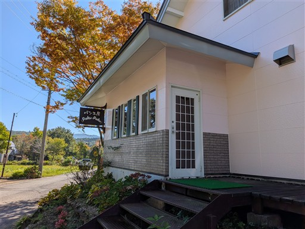
大日ヶ岳の登山口駐車場に到着。標高950m。
水神と書かれた石碑がある。
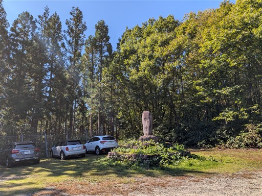
駐車場のすぐ側が登山口。
大日ヶ岳は様々な登山道があるが、その中でも一番人の多い道を選択。
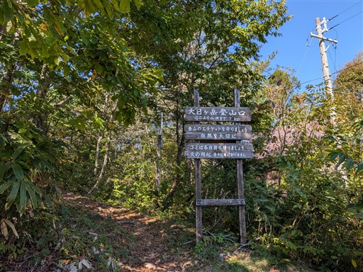
もう昼近いので当然人通りはほとんどない。
美しい樹林帯の中を登っていく。
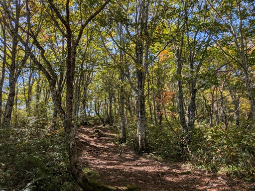
所々で距離を示す標識がある。
本日の山行は標高差はあまりないのだが、結構距離がある。
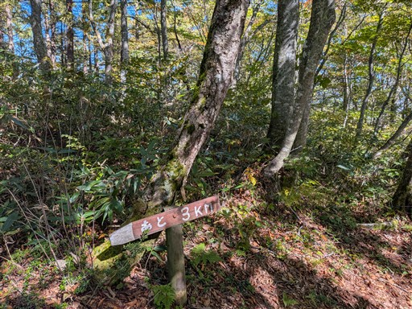
一ぷく平に到着。基本的には緩やかな尾根道なのだが、
その中でもここは特に緩やかな平地が広がっている。
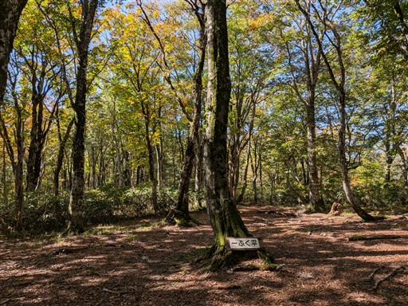
標高を上げると黄葉が現れる。
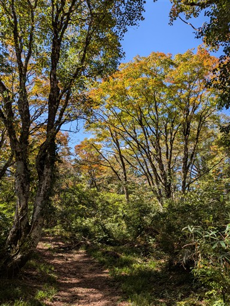
大きな木も見られる。
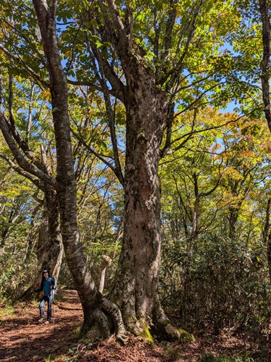
黄葉広がる美しい尾根道。
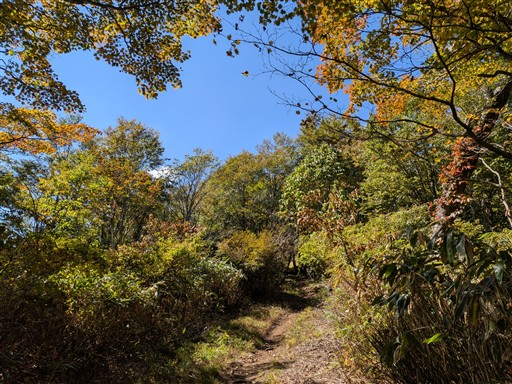
一角の視界が開けて白山が現れる。
近くから白山を眺めるのは初めてだ。
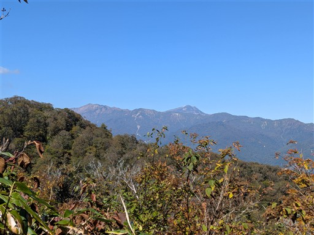
赤も混ざってくる。美しい紅葉ロードが続く。
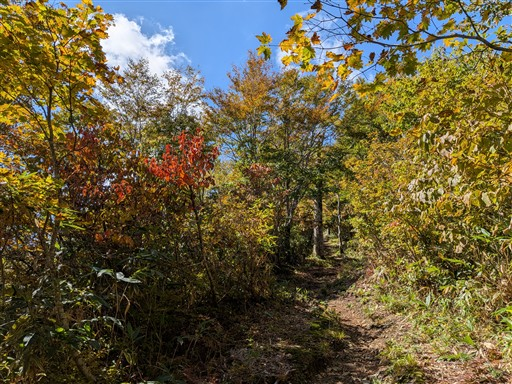
赤い実ができているが何の木だろう？
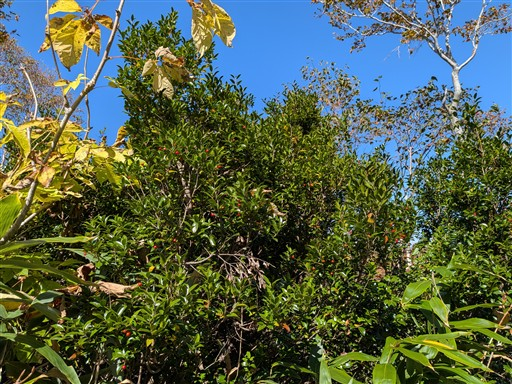
展望台に到着。
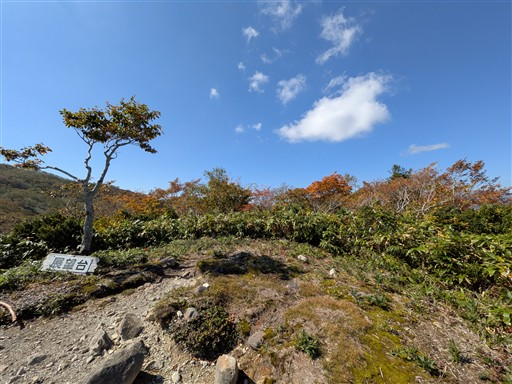
ここで一気に大展望が広がる。目の前に聳えるのはこれから向かう大日ヶ岳山頂。
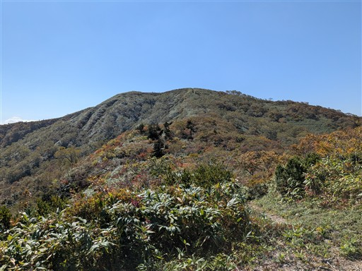
ずらっと横一列に並ぶのは北アルプス。剱岳～乗鞍岳まで見えている。
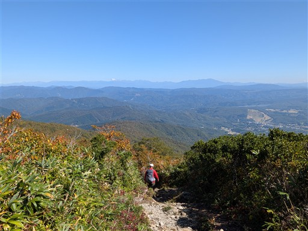
遠くに御嶽山。手前の右の方に見えるのは鷲ヶ岳の辺り。
鷲ヶ岳との間に広がるのはひるがの高原だ。
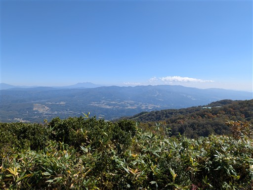
真っ赤に染まった葉。
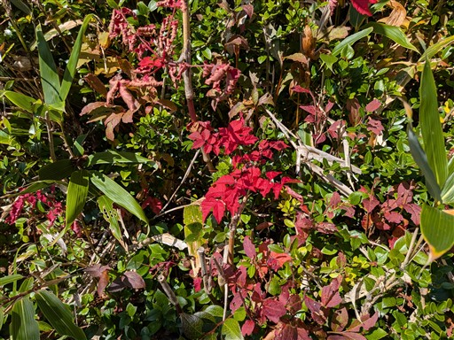
大日ヶ岳に向かって最後の登りを行く。
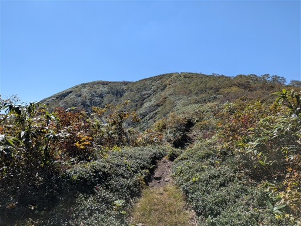
大日ヶ岳山頂に到着。標高1709m。
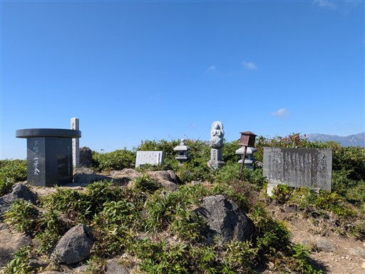
山頂も360度の大展望台。近くに聳えるのはもちろん白山。
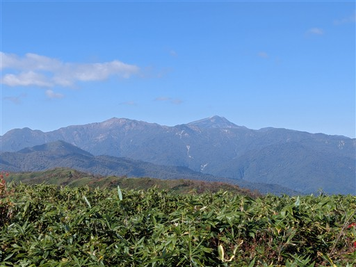
周囲は知らない山だらけ。
後で調べたら目立つ山は野伏ヶ岳、その右奥は経ヶ岳。
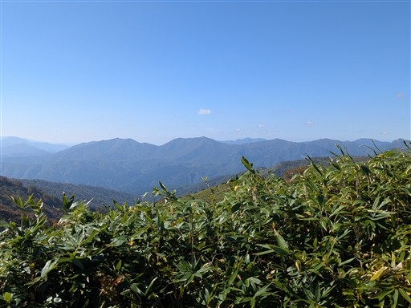
こちらは鎌ヶ峰経由の尾根道。こちらの道も良さそうだ。
どことなく山容は武尊山と似ている。
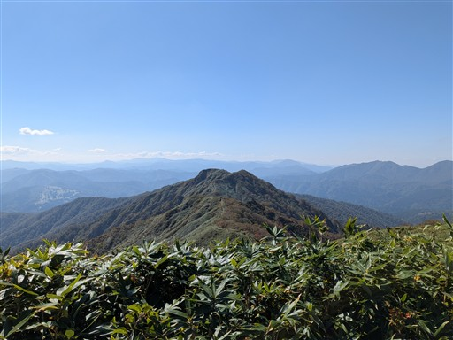
標識の上に置かれたカエル？の絵が描かれた石。
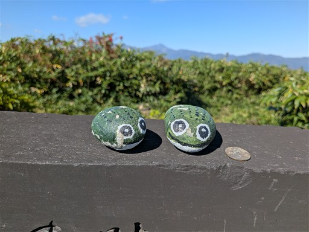
昼食を取ったら下山を開始する。周回コースはないので、同じ道を下る。
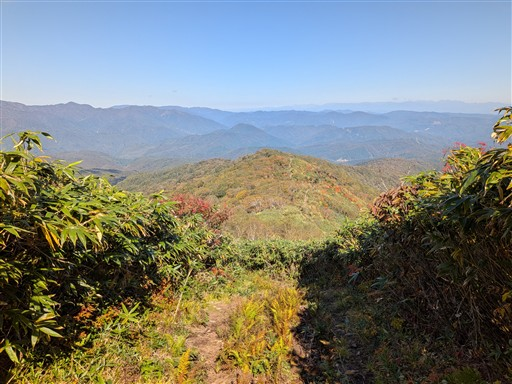
カエデの鮮やかな黄葉。青空に映える。
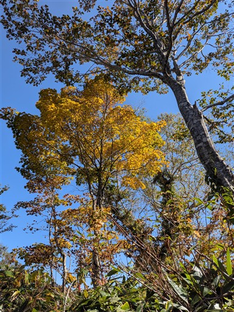
一ぷく平でおやつ休憩。
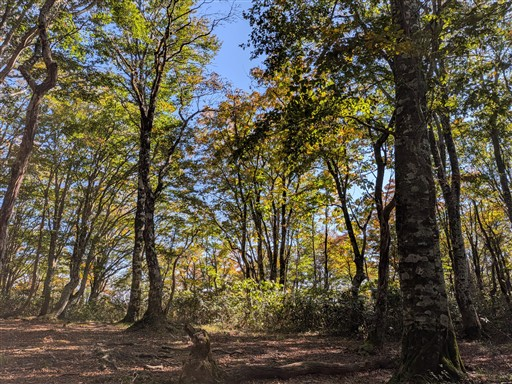
足下に蛇を発見。山で蛇を見かけるのは久しぶり。
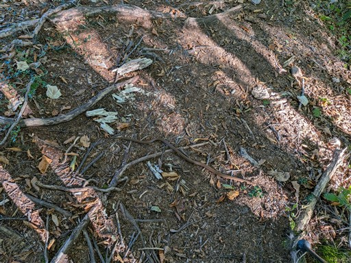
クリがたくさん落ちている。
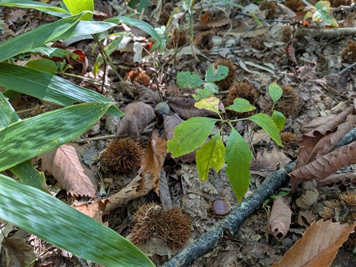
無事下山。
登山道は地味ながら自然林の残る緩やかで美しい道、
そして山頂からの大展望が印象的な山だった。
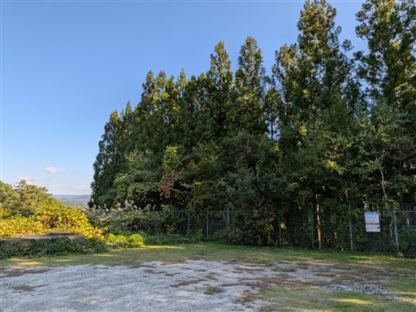
お腹が空いて明日の朝食のパンを食べてしまったので、再びパン屋に寄って購入。
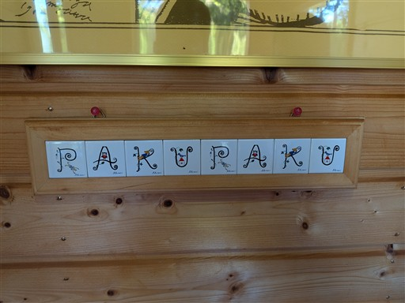
湯の平温泉に立ち寄る。カメムシが大量発生していた。今年は多いらしい。
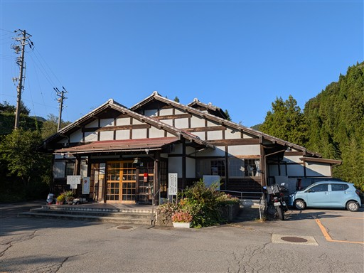
少し時間が余ったので近くの阿弥陀ヶ滝に立ち寄ることにする。
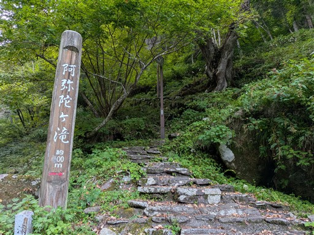
遊歩道の途中にある阿弥陀堂。
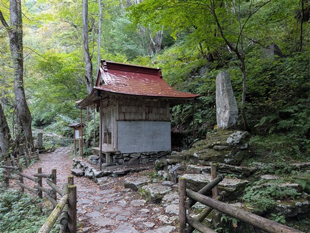
阿弥陀ヶ滝に到着。
落差60mの立派な滝で、周囲は巨大な岩壁に囲まれている。
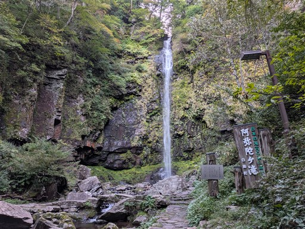
岩に当たらず直接空中を落ちていく水の流れはとても美しい。
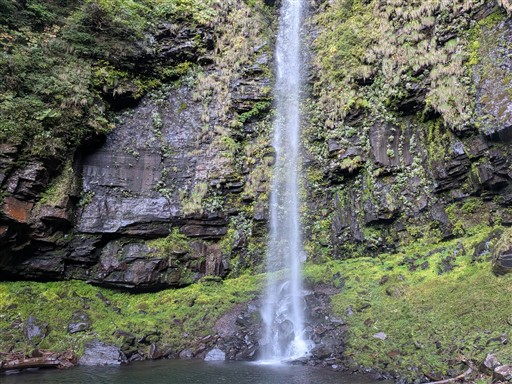
時間が遅いので周囲には誰もいない。もうすぐ日没だ。
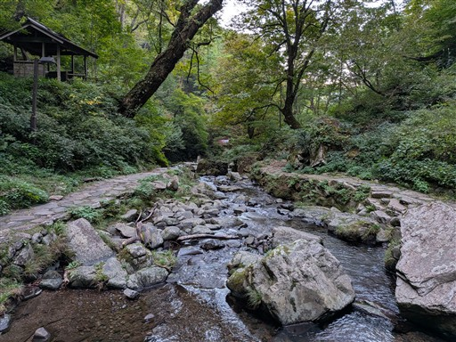
白鳥町まで下りて「ピッツェリア・ゴンザ」で夕飯をとる。
トマトがとてもおいしいピザだった。
食後は白山登山口に移動する。
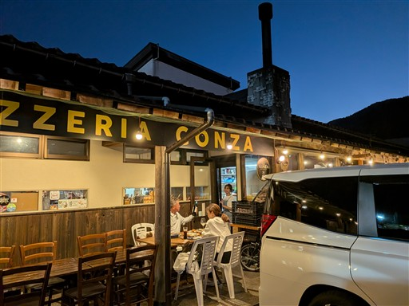